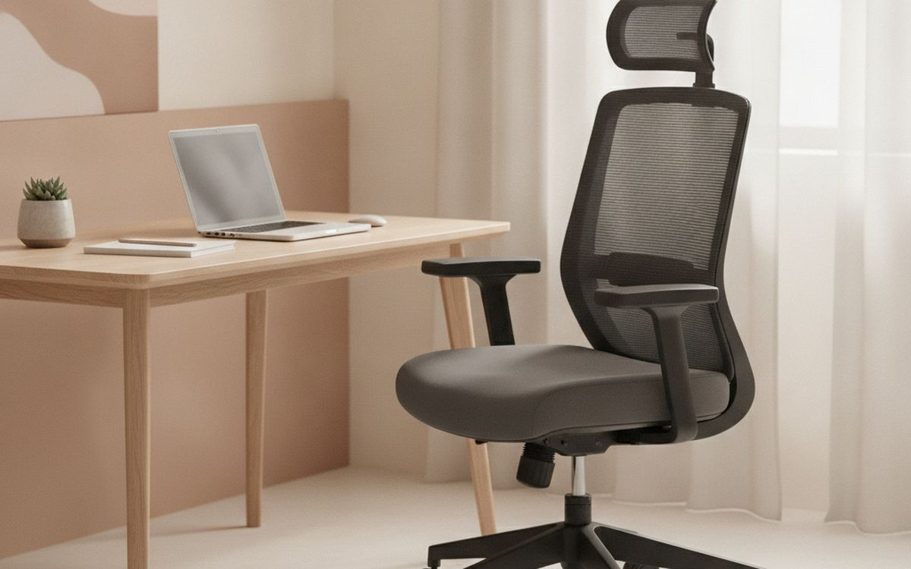
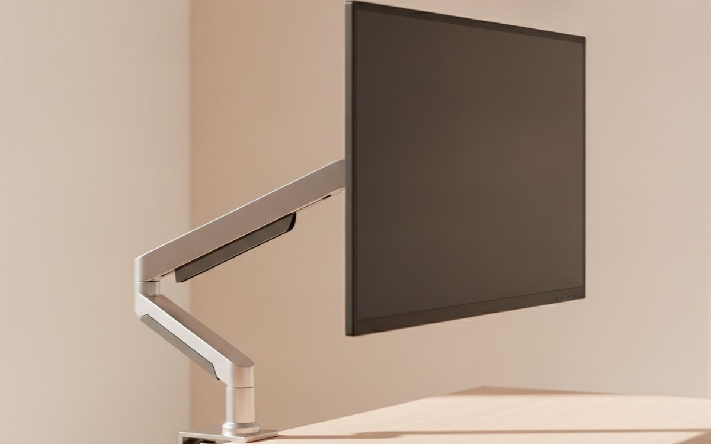
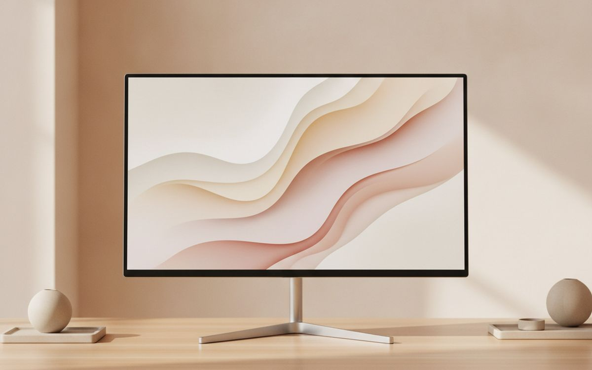
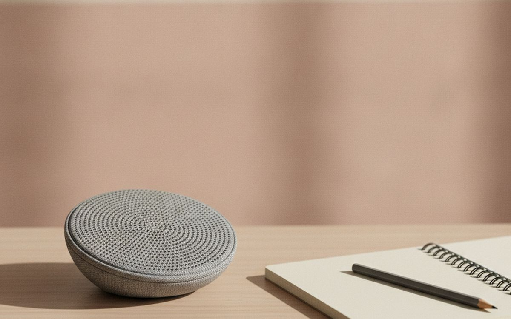
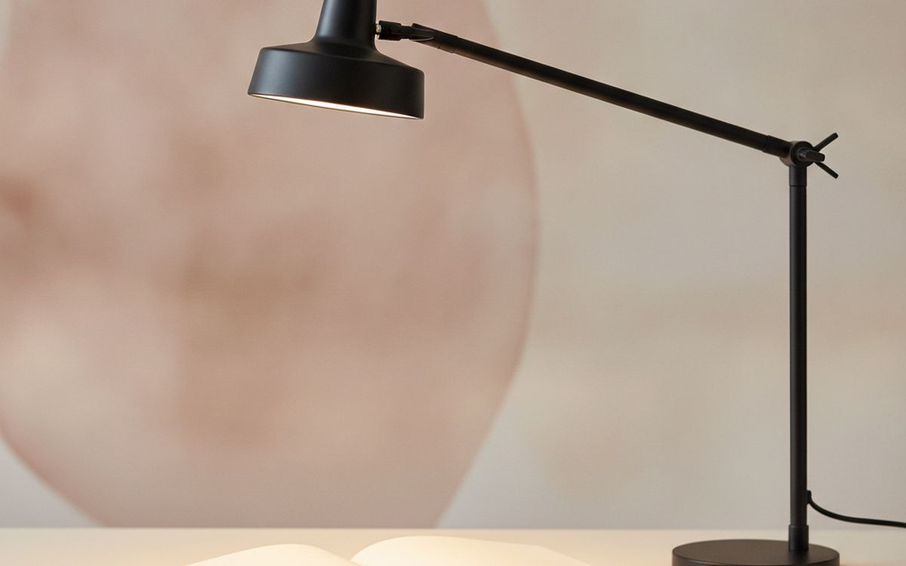
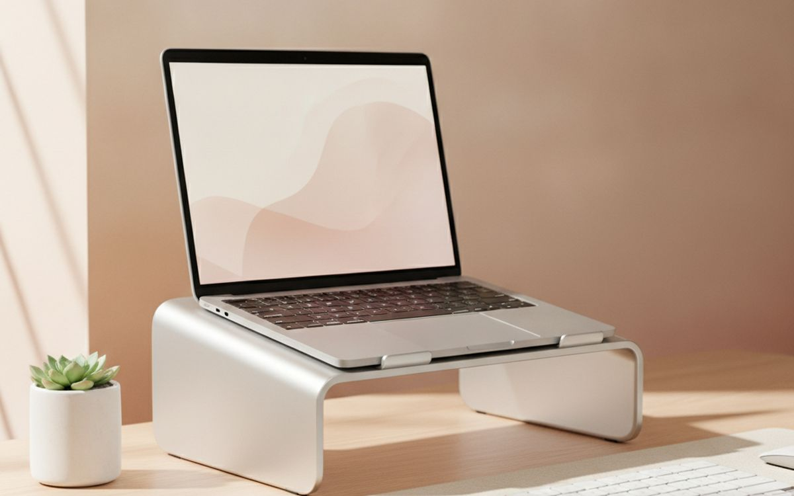
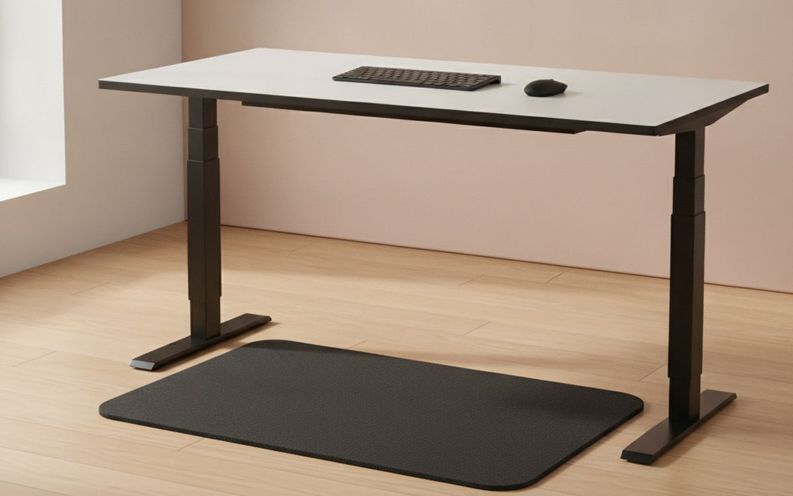
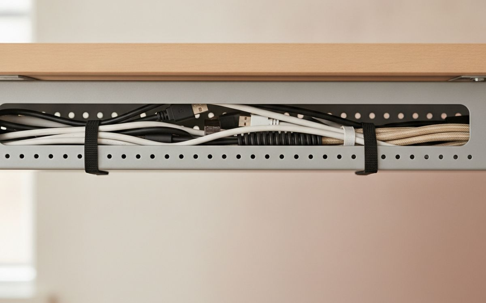
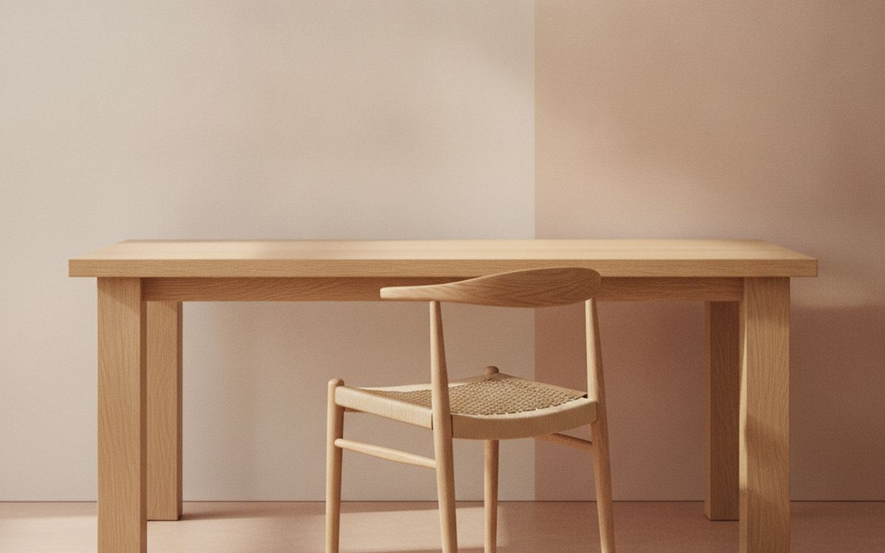
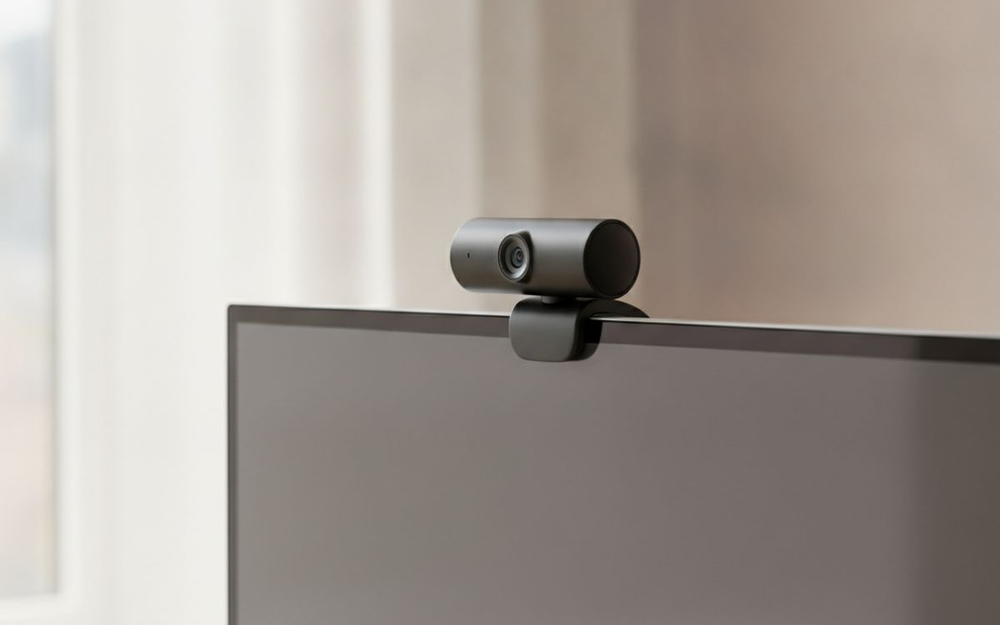

תשקיעו איפה שהגוף שלכם נוגע בעמדה. כל השאר בעמוד הזה הוא רשות, ואנחנו אומרים מה זה מה.
יש כלל פשוט להוצאת כסף על עמדת עבודה: תעדיפו את הדברים שנוגעים בגוף שלכם. כיסא, מקלדת, עכבר, וגובה המסך ביחס לעיניים. ארבעת אלה קובעים אם תסיימו את היום כואבים. כל השאר הוא נוחות או אסתטיקה.
הטעות שרוב האנשים עושים היא להפוך את הסדר — מסך יפהפה ומשטח שולחן מהמם מעל כיסא אוכל. אחרי חצי שנה מגיעים כאבי הצוואר ושום רזולוציה לא עוזרת.
המחירים הם הערכה נכון לזמן הכתיבה. לריהוט משרדי במיוחד יש שוק יד שנייה חזק, ואנחנו מציינים איפה משומש הוא באמת הקנייה החכמה.
גילוי נאות. הקישורים בעמוד הזה הם קישורי שותפים. אם תקנו דרכם אנחנו עשויים להרוויח עמלה, בלי תוספת עלות לכם. זה לא משפיע על מה שנכנס לרשימה או על הסדר שלו.
איך בחרנו
אנחנו נותנים משקל למחקר ארגונומי, לבדיקות עמידות שפורסמו ולדיווחים של בעלים לאורך זמן, יותר מאשר לפרסי עיצוב. לא השתמשנו בעצמנו בכל פריט כאן במשך שנת עבודה שלמה. איפה שההמלצה הכנה היא לקנות יד שנייה או לא להוציא כלום, נגיד את זה — ערימת ספרים מתחת למחשב נייד פותרת בדיוק את אותה בעיה כמו מעמד, ואנחנו מעדיפים להגיד לכם את זה מאשר למכור לכם מעמד.
השוואה מהירה
המחירים הם הערכה נכון לזמן הכתיבה ומשתנים לעיתים קרובות.
הבחירות

1
כאן תשקיעו קודםכיסא Herman Miller Aeron או Steelcase Leap יד שנייה
$300–700 used
הכיסא הוא הרכישה הכי חשובה, והמהלך החכם הוא לקנות כיסא מצוין יד שנייה במקום כיסא בינוני חדש. הכיסאות האלה נבנו לחיי שירות מסחריים של שתים-עשרה שנה, הם נמכרו בכמויות אדירות למשרדים שכבר לא קיימים, ויחידות משופצות נמכרות דרך קבע בשליש מהמחיר בחנות כשהחלקים החשובים הוחלפו. מה שאתם משלמים עליו זה יכולת כוונון — עומק מושב, גובה וזווית משענות ידיים, ותמיכה מותנית אמיתית שפוגשת את הגב שלכם איפה שהוא באמת נמצא. שבו על אחד לפני שאתם קונים אם רק אפשר, כי ה-Aeron מגיע בשלושה גדלים והגודל הלא נכון גרוע יותר מכיסא זול.
בעד
- בנוי לעשור ויותר של שימוש יומיומי
- יכולות כוונון נרחבות שמתאימות לגוף שלכם, לא לממוצע
- המחיר כיד שנייה הופך אותו לבר-השגה באמת
נגד
- המידה חשובה – נסו לפני שאתם קונים, אם אפשר
- איכות החידוש משתנה מאוד בין מוכרים שונים

2
התיקון הגדול ביותר ליציבה ביחס למחירזרוע למסך מחשב
$40–120
רוב מעמדי המסך מחזיקים את המסך נמוך מדי, ולכן אתם מבלים את היום במבט מעט למטה והצוואר מחזיק את הראש קדימה. זרוע מאפשרת לכם להציב את קצה המסך העליון בערך בגובה העיניים, וזה המקום שלו, והיא גם משחררת את השולחן מתחת. בדקו שני מספרים לפני הקנייה: תבנית ה-VESA של המסך והמשקל שלו, כי קפיץ גז שמדורג מתחת למשקל המסך שלכם ישקע לאט לאורך היום. אם לשולחן שלכם משטח עבה או מזכוכית, ודאו שהמלחציים מתאימים. זה תיקון זול לבעיה שנעשית יקרה אם מתעלמים ממנה.
בעד
- ממקמת את המסך בגובה הנכון, באופן קבוע
- מפנה את משטח השולחן שמתחת למסך
- זולה יחסית לבעיה שהיא מונעת
נגד
- חייבת להתאים לתקן VESA ולמשקל המסך
- המהדקים לא מתאימים לכל קצה של שולחן

3
נקודת האיזוןמסך 27 אינץ' ברזולוציית 1440p
$200–350
הגודל והרזולוציה האלה הם נקודת האיזון לעבודה משרדית: הטקסט חד בלי צורך בהגדלה, ובאמת נכנסים שני מסמכים זה לצד זה. מעבר ל-4K ב-27 אינץ' אומר להריץ ברזולוציה מוקטנת ממילא, כלומר אתם משלמים על פיקסלים שאתם אחר כך זורקים. אם המחשב הנייד שלכם תומך, קחו דגם עם הזנת חשמל דרך USB-C — אז כבל אחד נושא וידאו, נתונים וטעינה, וטקס החיבור והניתוק היומי הופך לתנועה אחת. ותרו על מסך מעוקל בגודל הזה; עיקול מצדיק את עצמו ב-34 אינץ' ומעלה, לא כאן.
בעד
- טקסט חד בלי פשרות של שינוי גודל (scaling)
- דגמי USB-C מצמצמים את כמות הכבלים על השולחן לאחד
- שוק רחב ותחרותי שומר על מחירים נמוכים
נגד
- רזולוציית 4K בגודל הזה היא בזבוז ברובה
- יש שונות גדולה באחידות הצבע בפאנלים זולים

4
השדרוג הטוב ביותר לאיכות שיחותרמקול ועידה Anker PowerConf או Jabra Speak
$70–150
מיקרופונים של מחשבים ניידים ממוקמים ליד המאוורר ומכוונים לתקרה, ובגלל זה אתם נשמעים רחוקים ומהדהדים בכל שיחה. רמקול ועידה ייעודי עם מערך מיקרופונים כיווני וביטול הד מתקן את זה ברכישה אחת, ובניגוד לאוזניות הוא לא לוחץ לכם על הראש שש שעות. אם אתם בשיחות כל היום, זה משנה איך אנשים אחרים חווים אתכם יותר מכל שדרוג מצלמה. אם אתם בשתי שיחות בשבוע, אוזניות חוטיות עם מיקרופון על הכבל כבר פותרות את רוב הבעיה כמעט בחינם.
בעד
- מעלים הד ואת צליל המיקרופון החלול של הלפטופ
- אין לחץ של אוזניות על הראש לאורך ימים ארוכים
- נוח לנסיעות ולשיחות מחדר המלון
נגד
- מיותר אם אתם כמעט ולא עושים שיחות
- קולט רעשי רקע בחלל משותף

5
הכי לא מוערךמנורת שולחן עם טמפרטורת צבע מתכווננת
$40–120
לעבוד לאור המסך בחדר חשוך זה מה שגורם לערבים להרגיש מתישים — הניגוד בין מסך בהיר לסביבה חשוכה באמת מעייף את העיניים. מנורה שמאירה את הקיר ואת השולחן מסביב למסך מסלקת את הניגוד הזה. טמפרטורת צבע מתכווננת חשובה כי אור קר בבוקר ואור חם אחרי החשכה מתאימים לאיך שהקשב שלכם באמת עובד. מקמו אותה בצד ולא מאחוריכם, אחרת תבלו את היום מול ההשתקפות שלה במסך שלכם.
בעד
- מפחיתה את מאמץ העיניים שנגרם ממסך בחדר חשוך
- קל יותר לעבוד תחת אור חם בשעות הערב
- משחררת אתכם מהתלות בתאורת התקרה
נגד
- מיקום גרוע יוצר השתקפות על המסך
- נורות לד זולות מהבהבות ומציגות צבעים באופן גרוע

6
התיקון הזול ביותר בעמודמעמד למחשב נייד, או ערימת ספרים
$0–50
מחשב נייד כופה פשרה בלתי אפשרית: אם המסך בגובה הנכון המקלדת באוויר, ואם המקלדת בגובה הנכון אתם מסתכלים למטה כל היום. הרמת המחשב והוספת מקלדת ועכבר נפרדים פותרות את זה לגמרי. מעמד אלומיניום מסודר וגם נייד, אבל ספרים עובדים בדיוק אותו דבר מבחינה ארגונומית ולא עולים כלום — לפיזיקה לא אכפת מה מחזיק את המסך למעלה. קנו את המעמד אם חשוב לכם המראה או אם אתם צריכים לסחוב אותו; אחרת תשקיעו את הכסף במקלדת, שהיא החצי של התיקון הזה שבאמת עולה משהו.
בעד
- פותר לחלוטין את כאבי הצוואר מעבודה עם לפטופ
- הגרסה החינמית עובדת טוב באותה מידה
- משפר את זרימת האוויר לקירור בתור תופעת לוואי
נגד
- עובד רק עם מקלדת ועכבר נפרדים
- עוד משהו לסחוב אם אתם עובדים ממקומות שונים

7
רק אם אתם באמת עומדיםשטיח עמידה נגד עייפות (אם יש לכם שולחן עמידה)
$40–90
לעמוד על רצפה קשה במשך שעות זה סוג משלו של גרוע, וזו הסיבה שרוב שולחנות העמידה הופכים בשקט לשולחנות ישיבה תוך חודש. שטיח מרופד מאפשר לכם להעביר משקל ולזוז, וזו כל הנקודה — התועלת בעמידה מגיעה מתנועה ולא מזה שאתם זקופים. קנו את זה רק אחרי שהחזקתם שולחן עמידה מספיק זמן כדי לדעת שאתם משתמשים בו. אם אתם עדיין מתלבטים, שווה לדעת שהמחקר על שולחנות עמידה צנוע בהרבה ממה שהשיווק מרמז: החלפת תנוחות עוזרת, עמידה נוקשה כל היום לא.
בעד
- הופך עמידה ממושכת לאפשרית באמת
- מעודד את תזוזת הגוף הקטנה שמספקת את היתרון
- זול בהשוואה לשולחן שאיתו הוא עובד
נגד
- חסר טעם בלי שולחן עמידה
- מפריע כשחוזרים לשבת

8
מאמץ קטן, תמורה קבועהמגש כבלים ורצועות רב-פעמיות
$20–45
זה הפריט הכי פחות מעניין כאן וזה שאנשים הכי שמחים שעשו. מגש מתחת לשולחן מרים את המפצל ואת מהלכי הכבלים מהרצפה, כלומר אפשר לשאוב כמו שצריך, להזיז את השולחן בלי לנתק הכול, ולהפסיק לבעוט את המטען מהמחשב הנייד. השתמשו ברצועות סקוץ' רב-פעמיות ולא באזיקוני פלסטיק, כי העמדה תשתנה וחיתוך אזיקון בכל פעם זו הדרך שבה שולחן מסודר חוזר לקדמותו. חצי שעה, פעם אחת, והבעיה נעלמת לשנים.
בעד
- מאפשר לנקות כמו שצריך מתחת לשולחן
- מאפשר להזיז את השולחן בלי לנתק הכל מהחשמל
- עבודה חד-פעמית שמחזיקה לשנים
נגד
- ההתקנה היא עבודה קטנונית של חצי שעה
- תעלות נתפסות לא מתאימות לכל שולחן

9
איפה לא כדאי לבזבזשולחן משרדי יד שנייה, או דלת מלאה על רגליים
$80–400
השולחן הוא משטח שטוח בגובה הנכון. הוא כמעט לא עושה שום דבר שזול לא יעשה, ולכן זה המקום הכי קל לחסוך בו ולהעביר את הכסף לכיסא. מה שבאמת חשוב זה עומק — לפחות 70 סנטימטר כדי שהמסך יוכל לשבת מספיק רחוק — ונוקשות, כי שולחן שמתנדנד כשמקלידים עליו מטריף. שולחנות משרדיים יד שנייה נמצאים בשפע, הם מוצקים מאוד ומתומחרים לזוז כי קשה להוביל אותם. שלדות חשמליות לישיבה ועמידה הן השדרוג היחיד ששווה לשלם עליו, ורק אם באמת תשתמשו בהן.
בעד
- חיסכון ענק לעומת שולחן מעצבים
- שולחנות מסחריים הם יציבים במיוחד
- הכסף שנחסך הולך לכיסא, איפה שזה באמת חשוב
נגד
- מסורבל לאיסוף ולהובלה
- למשטחים עליונים מיד שנייה יש לעתים קרובות סימנים קוסמטיים

10
קנייה מותניתמצלמת רשת ייעודית, רק אם מכסה המחשב סגור
$60–160
תהיו כנים לגבי השאלה אם אתם באמת צריכים את זה. מצלמות של מחשבים ניידים מודרניים סבירות, ואם המחשב פתוח מולכם המצלמה המובנית מספיקה. המקרה האמיתי הוא עמדה שבה המחשב סגור בעגינה או שהמסך על זרוע — אז אין לכם מצלמה בגובה העיניים, ומצלמה נתלית היא הפתרון היחיד. אם אתם כן קונים, תאורה תשפר את התמונה שלכם הרבה יותר מרזולוציית החיישן: חלון או מנורה מולכם מנצחים מצלמה יקרה בחדר חשוך בכל פעם מחדש.
בעד
- הפתרון היחיד למצב של לפטופ סגור או מותקן על זרוע
- ממקמת את המצלמה בגובה העיניים
- אופטיקה טובה יותר מרוב המצלמות המובנות
נגד
- מיותרת לחלוטין אם הלפטופ שלכם פתוח
- התאורה חשובה הרבה יותר מהמצלמה
שאלות נפוצות
מה הסדר הנכון לקנות בו?
כיסא, אחר כך גובה מסך, אחר כך מקלדת ועכבר, ואז כל השאר. הסדר הזה עוקב אחרי כמה כל דבר משפיע על הגוף שלכם לאורך שנת עבודה.
האם שולחנות עמידה שווים את זה?
החלפה בין ישיבה לעמידה עדיפה על כל אחת מהן לבד, אבל התועלת הבריאותית קטנה בהרבה ממה שהשיווק מרמז. אם שולחן עמידה הוא מאמץ תקציבי, טיימר שמזכיר לכם לקום נותן את רוב התועלת בחינם.
מסך אחד גדול או שניים קטנים?
שני מסכים אם אתם כל הזמן מסתכלים בדבר אחד תוך כדי עבודה על אחר. מסך רחב אחד אם אתם בעיקר רוצים יותר מקום בתוכנה אחת. שניים בדרך כלל הבחירה הגמישה יותר לעבודה משרדית.
האם כיסא יקר באמת שווה אם אני עובד מהבית רק יומיים בשבוע?
אז תקנו יד שנייה ולא חדש. כיסא מסחרי משופץ בשליש מהמחיר הוא התשובה הנכונה לשימוש חלקי — אתם מקבלים את יכולת הכוונון בלי לשלם על אחריות שכמעט לא תנצלו.
← כל המדריכים
כשותפים של אמזון אנחנו מרוויחים עמלה מרכישות מזכות. המחירים והזמינות נכונים לזמן הפרסום ועשויים להשתנות.